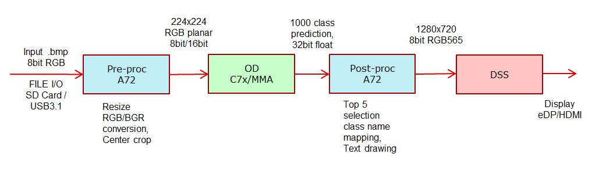
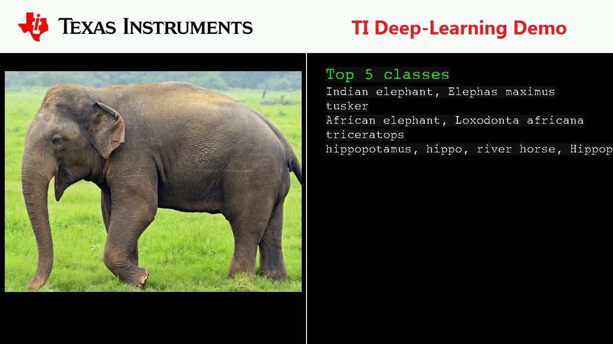

Introduction
This application shows how to write and run a TIDL node which uses IVISION based TI Deep Learning library. The demo application supports Object Classification [OC] using TI's Jacintonet DL network. For OC, the application accepts a list of .bmp files of resolution less than 640x512 specified in names.txt file. It performs a resize to 224x224 resolution on MPU, de-interleaves RGB pixels to planar format on C66 as a pre-processing step before providing it to TIDL running on C7x DSP. The output of TIDL is sorted to pick the top 5 classes on MPU and an output template is prepared in a 1280x720 RGB buffer which is then given to the DSS driver for display. The demo is intentionally slowed down to make it viewable.
Supported plaforms
| Platform | Linux x86_64 | Linux+RTOS mode | QNX+RTOS mode | SoC |
| Support | YES | YES | YES | J721e / J721S2 / J784S4 |
Data flow

Steps to run the application on J7 EVM (Linux+RTOS mode)
- Build the application and related libraries as mentioned in Build Instructions for Linux+RTOS mode
- A sample "app_oc.cfg" for Object classification is provided under "/opt/vision_apps/" on the rootfs partition.
- Create a folder and keep all the .bmp files used for classification, there are a few images under "/opt/vision_apps/test_data/psdkra/app_tidl".
- Make sure the images dont exceed a resolution of 640x512, otherwise the image will not be displayed on the screen, but it will be classified and top 5 results will be shown.
- Create a names.txt file at the same level where the .bmp files are kept, this file should contain all the names of the .bmp images, one file in each new line. A sample file is provided under "/opt/vision_apps/test_data/psdkra/app_tidl"
- Run the app as shown below
cd /opt/vision_apps
source ./vision_apps_init.sh
./run_app_tidl.sh
Steps to run the application on J7 EVM (QNX+RTOS mode)
- Build the application and related libraries as mentioned in Build Instructions for QNX+RTOS mode
- A sample "app_oc.cfg" for Object classification is provided under "/opt/vision_apps/" on the rootfs partition.
- Create a folder and keep all the .bmp files used for classification, there are a few images under "/ti_fs/vision_apps/test_data/psdkra/app_tidl".
- Make sure the images dont exceed a resolution of 640x512, otherwise the image will not be displayed on the screen, but it will be classified and top 5 results will be shown.
- Create a names.txt file at the same level where the .bmp files are kept, this file should contain all the names of the .bmp images, one file in each new line. A sample file is provided under "/ti_fs/vision_apps/test_data/psdkra/app_tidl"
- Run the app as shown below
cd /ti_fs/vision_apps
. ./vision_apps_init.sh
./run_app_tidl.sh
Steps to run the application on PC Linux x86_64
- Build the application and related libraries as mentioned in Build Instructions for PC emulation mode
- A sample "app_oc.cfg" for Object classification is provided under "${PSDKR_PATH}/vision_apps/apps/dl_demos/app_tidl/config" folder.
- Create a folder and keep all the .bmp files used for classification, there are a few images under "/opt/vision_apps/test_data/psdkra/app_tidl".
- Make sure the images dont exceed a resolution of 640x512, otherwise the image will not be displayed on the screen, but it will be classified and top 5 results will be shown.
- Create a names.txt file at the same level where the .bmp files are kept, this file should contain all the names of the .bmp images, one file in each new line. A sample file is provided under "/opt/vision_apps/test_data/psdkra/app_tidl"
- Create an output directory
- Run the app as shown below
./vx_app_tidl --cfg ${PSDKR_PATH}/vision_apps/apps/dl_demos/app_tidl/config/app_oc.cfg
- The output will be written in "app_tidl_out" folder in .bmp format.
Sample Output
Shown below is a example input and its corresponding output



 1.8.14
1.8.14